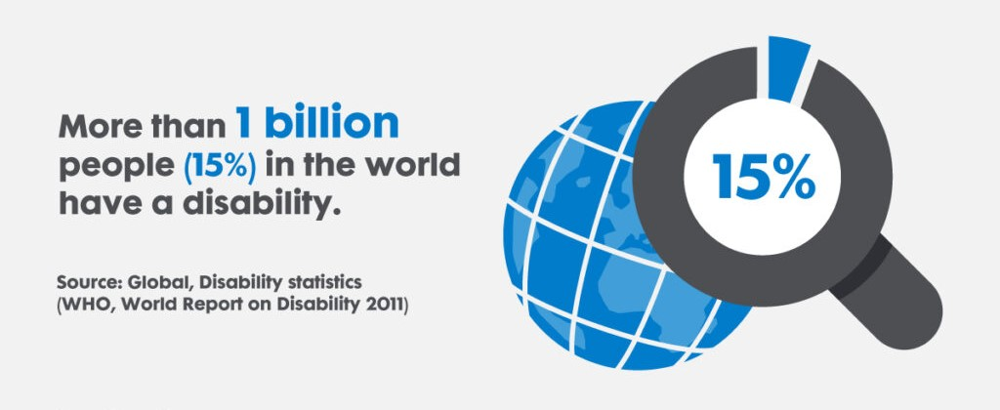

Why You Should use Universal Design
Ethical
According to the World Health Organization, 1 in 6 people experience a “significant disability.” Even temporary disabilities such as a broken bone or other form of injury can be a significant impediment to accessing the internet. Making a non-universal website would be secluding many potentially curious people from experiencing what you are offering.
Financial
If you aren’t swayed to make your site universally designed based solely on selfless means, then maybe a monetary gain would spike your interest. By making your site universally designed, significantly more people can access your content, meaning your content can be much more profitable with its increased exposure.
Logical
It is much more efficient to begin a website with dynamic universal design elements in mind rather than adding accessible features after you’ve made your website. By starting with a good universal design framework, you will also not have to fear future accessibility add-ons as your site will be more easily updatable to new accessibility standards
Resources
- “Disability.” World Health Organization, World Health Organization, www.who.int/health-topics/disability#tab=tab_1. Accessed 9 Dec. 2024.
- Kramer, Howard. “Universal Design for Digital Media - a 3-Credit Course*.” Accessing Higher Ground, 11 Dec. 2013, accessinghigherground.org/udclass/.